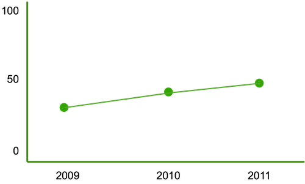

Data Portal
Africa
East Asia & Pacific
Europe & Central Asia
France
Portugal
Spain
United Kingdom
Latin America & Caribbean
Middle East
North America
South Asia
WEB INDEX (DRAFT)
Universal Access
Freedom & Openness
Relevant Content
Empowerment
Select a year
2007
2008
2009
2010
2011
2012
WEB INDEX (DRAFT) > UNIVERSAL ACCESS > COMMUNICATIONS INFRASTRUCTURE
Spain - Universal Access in 2010
Europe
13
Ranking
85.67
Score
Time progression
